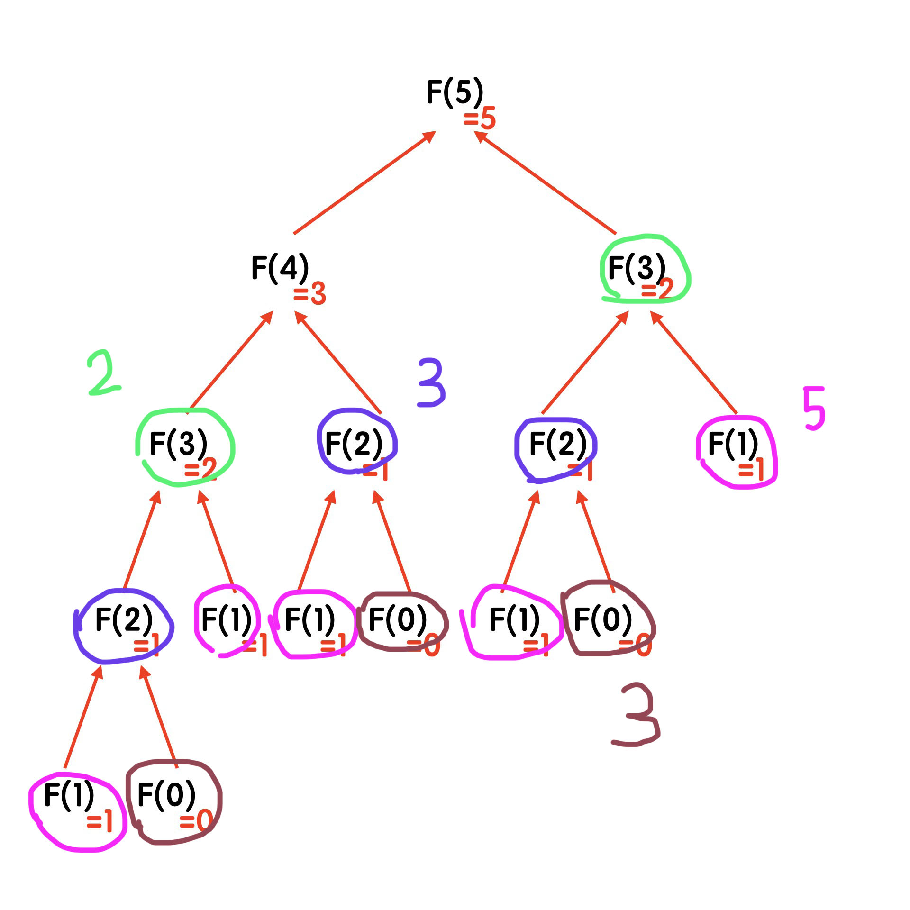

好像寫程式都一定會實作的數列。
遞迴法
遞迴的意思就是 在一個 function 裡面呼叫自己，而費式數列的規律正好是這種特性：
1 | fib(0) = 0 |
所以除了 fib(0) 跟 fib(1) 之外，如果想取出數列中的第 n 個值，就可以用 fib(n) = fib(n-2) + fib(n-1) 的方式來取得，所以用遞迴的方式來寫的話就會這樣：
1 | function fib(n) { |
用這種方式實作的時間複雜度大約會是 「O(2^n)（實際上是 O(1.6^n) 左右）」 。
意思是指每當 n 增加 1，執行的步驟就會增加 2 倍：
1 | n = 1 => 2 |
也就是說如果要求出 f(100) 的值，大概就會需要 2^100 次步驟。如果你把拿上面的程式碼去跑跑看，大概會直接當機 ( ºωº )
想知道詳細的步驟可以參考 這篇文章。
所以從上面你可以知道，用遞迴來求費式數列並不是一個好做法。
以空間換取時間
遞迴法最大的問題在於「重複計算」，例如說在求 fib(5) 的時候是像這樣子：

fib(0)總共被呼叫了 3 次fib(1)總共被呼叫了 5 次fib(2)總共被呼叫了 3 次fib(3)總共被呼叫了 2 次
與其這樣每次都重複呼叫，不如「把每個值都寫在一張表上」，等需要知道值的時候再去查表就好了。
所以可以建立一個 array 來儲存數列中的每個值。當想要搜尋數列裡第 n 個值的時候，就先把 0 ~ n 的這個數列表建立出來，接著在直接查表就可以了：
1 | function fib(n) { |
用這種方式做出來的時間複雜度會是 O(n)，意思是 n 的值就是步驟的次數。
所以現在如果要求 fib(100) 也只需要 100 次步驟，保證你的電腦不會再當機惹。